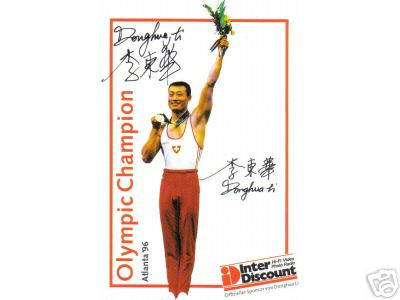

Li Donghua (SUI)
1996 Olympic PH Champion
1996 European PH Champion
1995 World PH Champion

Medal Total
Olympic Games: 1
Gold
World Championships: 1 Gold, 1 Silver, 1 Bronze
European Championships: 1 Gold
Li was born on November 10, 1967 in Chengdu and began gymnastics in 1974. He met his Swiss wife while she was on holiday in Beijing. Visit his website for more information.
Competition
Results
1987
CHN Championships: 1st PH
1990
SUI Championships: 3rd AA
1994
DTB Cup: 3rd PH
European Championships: 13th AA
Lausanne Cup: 3rd AA
Swiss Cup: 7th PH
World Championships (Brisbane): 3rd PH
World Championships (Dortmund): 14th AA (prelims)
1995
Blume Memorial: 7th AA
China Cup: 8th AA
Gander Memorial: 6th AA
Swiss Cup: 1st PH
World Championships: 15th Team, 35th AA, 1st PH
1996
Cottbus International: 1st PH
European Championships: 1st PH
French International: 4th PH
Olympic Games: 1st PH
World Championships: 2nd PH
This page was created on June 25,
2005 and was last updated on November 08, 2005.
© Gymn Forum